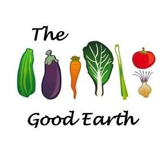
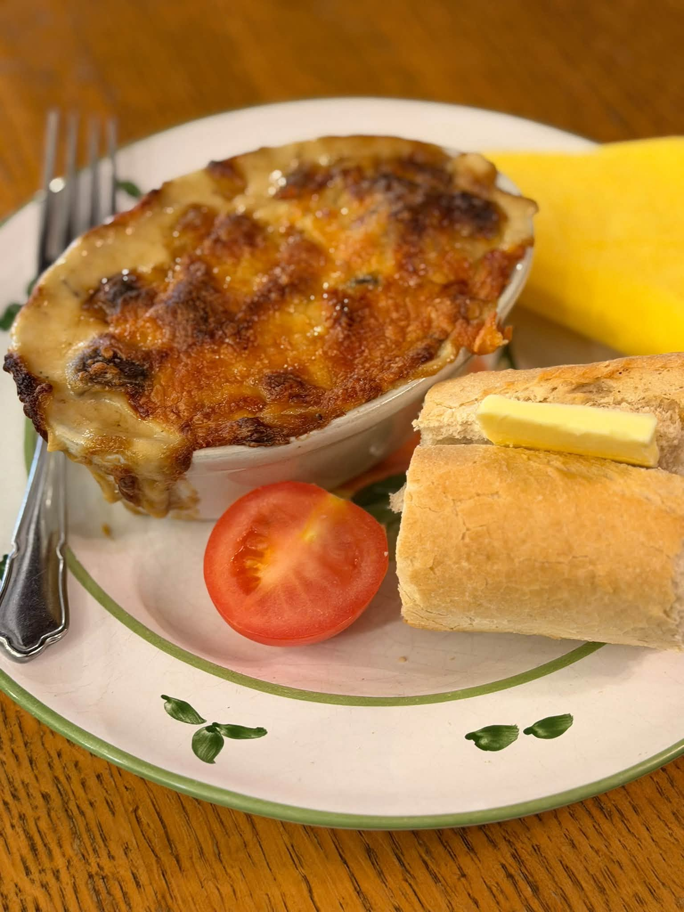
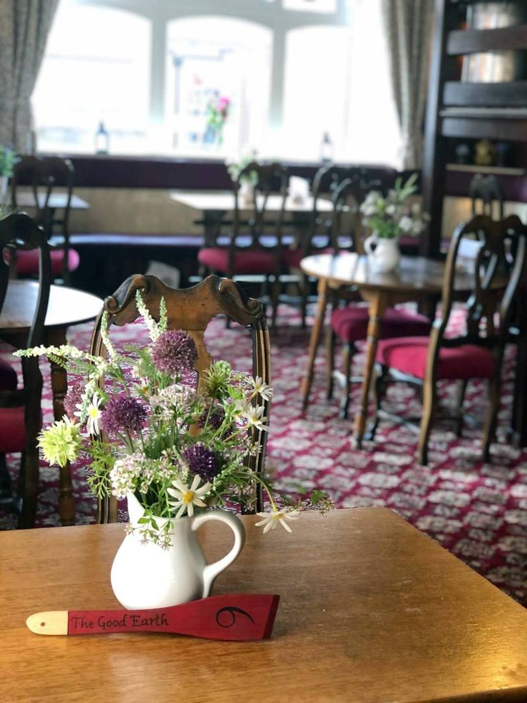

Leek and Lancashire Hotpot
From the post displayed 10 October. That week’s availability does not confirm today’s menu.

The Good Earth
FREE LANE · LEICESTER
An independent family restaurant serving vegetarian and vegan cooking in the heart of Leicester.
Browse dish examplesShared by the restaurant. Check today’s choices directly with the café.
FROM THE RESTAURANT’S POSTS
These are dish examples, not today’s full menu. Ask the café about current choices, prices, vegan options and allergens.
3 dish examples
A LEICESTER STORY SINCE 1965
Just off Granby Street, The Good Earth pairs vegetarian and vegan cooking with a homely, old fashioned setting.
Visit Leicester traces the restaurant’s beginnings to 1965.
Plan a visit
Check the current opening times and menu with the café before travelling.
0116 262 6260View the café’s Facebook updatesExplore a seasonal dish and café updates signup.
Local signup demo. No subscription is created.